Accueil › Dépigeonnage & anti-pigeons › Prix d'un dépigeonnage
Dépigeonnage · CopropriétéFilets, pics, nettoyage : voici les fourchettes de prix 2026 et tout ce qui fait varier le devis d'un dépigeonnage d'immeuble en copropriété.
Le coût d'un dépigeonnage varie beaucoup d'un immeuble à l'autre : tout dépend des surfaces à protéger, de la solution retenue et de la difficulté d'accès. Voici les fourchettes indicatives 2026 et les facteurs qui font monter ou descendre un devis, pour vous aider à comparer sereinement.
| Prestation | Fourchette indicative |
|---|---|
| Pose de pics anti-pigeons (au mètre linéaire) | environ 25 à 55 €/ml |
| Pose de filet anti-pigeons (au m²) | environ 30 à 70 €/m² |
| Nettoyage & désinfection des fientes | sur devis, selon volume et accès |
| Petite intervention copropriété (forfait) | souvent à partir de quelques centaines d'euros |
Ces ordres de grandeur sont donnés à titre purement indicatif et ne valent pas devis. Seule une visite technique permet de chiffrer précisément votre immeuble.
Une grande partie des zones de nidification se trouvent en hauteur : corniches, toitures, cœurs d'îlot. L'accès sur cordes permet d'intervenir sans échafaudage, plus vite et souvent à moindre coût qu'une nacelle, tout en accédant à des recoins difficiles. C'est aussi l'assurance d'une pose soignée, durable, et discrète sur le plan esthétique.
Pour le détail des solutions (filets, pics, câbles, nettoyage) et nos zones d'intervention, voir notre page : dépigeonnage & systèmes anti-pigeons en Île-de-France.
Cela dépend des surfaces, de la solution (pics, filets…) et de l'accès. À titre indicatif, comptez environ 25 à 55 €/ml pour des pics et 30 à 70 €/m² pour un filet. Seule une visite technique donne un prix fiable.
Les pics conviennent aux corniches et rebords étroits ; les filets ferment de grands volumes (cours, soffites, balcons). Le choix dépend de la configuration et de l'usage des zones à protéger.
Pas systématiquement. Le nettoyage et la désinfection sont souvent facturés à part car ils sont indispensables avant la pose, pour des raisons sanitaires.
Des filets et pics de qualité, bien posés, durent plusieurs années. Un entretien périodique prolonge leur efficacité.
Diagnostic et devis anti-pigeons sous 48 h pour votre copropriété en Île-de-France.
En savoir plus : Dépigeonnage & anti-pigeons →Besoin d'un diagnostic ? Appelez le 06 52 25 24 03